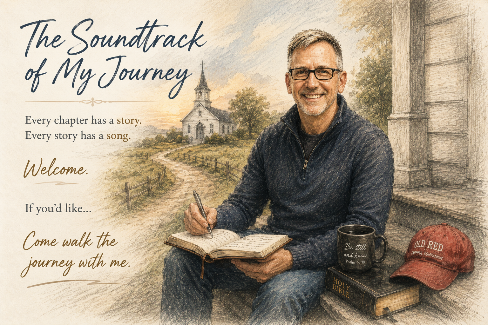

What God Is Teaching Me
Scripture, prayers, conviction, questions, and the truths God keeps placing in front of me.

My Story
Every chapter has a story. Every story has a song.
That’s probably because, in many ways, it was.
My parents filled our home with music. They both sang in our church choir, the city concert choir, and local musical theater productions. My mother even performed at the historic Barter Theatre in Abingdon, Virginia. Music wasn’t something we did occasionally—it was simply part of who we were.
As a child, I loved musicals. I didn’t just watch them; I stepped into them. Songs from Brigadoon, West Side Story, Oliver!, They’re Playing Our Song, and many others became part of my imagination. I found myself blending their stories into my own, letting music give voice to feelings I didn’t yet know how to express.
Then Christian music entered my life.
I can still remember singing Here I Am, Lord as a young boy. I didn’t fully understand everything those words meant, but something deep inside me knew they mattered. Looking back, I believe God was already planting seeds that would shape the rest of my life.
I followed my love for music through high school and college, singing wherever I could. During my senior year of high school, I was selected for the All-State Choir. Singing wasn’t just something I enjoyed—it was one of the places where I felt most alive.
Yet there was always one dream that remained just beyond my reach. I wanted to play the piano or guitar. I could hear songs in my heart, but I didn’t have the ability to bring them fully to life. The lyrics would come. The emotions were real. The stories were there. But they remained in notebooks and scattered pages.
Life kept writing new chapters.
I became a father. I built a career as an engineer. I experienced success and failure, love and loss, seasons of confidence and seasons of doubt. Friends I dearly loved passed away. My children grew up far faster than I imagined. God opened doors for me to serve on mission trips around the world, where I witnessed His faithfulness in ways I will never forget.
Through all of it, something inside me kept searching for the story—and often, the song.
Sometimes it became a prayer. Sometimes worship. Sometimes a question. Sometimes it simply helped me remember.
I’m not merely writing songs. I’m documenting the story God is writing in my life. Some chapters simply happen to be sung.
I believe things don’t simply happen to us. God can use them to work for us—forming our character, strengthening our faith, and preparing us for what He has next.
This website is my attempt to preserve those chapters.
Some become songs. Some become stories. Some may become books. Others are still being written.
A Tradition from the Barter Theatre
Robert Porterfield, founder of the historic Barter Theatre in Abingdon, Virginia, ended each performance with a simple request to the audience:
“If you like it, talk about it. If you don’t, keep your mouth shut.”
— Robert Porterfield
It was a humorous line, but it also reflected the power of sharing something that has moved us. Stories, music, and experiences continue to live when people carry them beyond the moment and tell others about them.
I’m not inviting people to simply listen to my music.
I’m inviting them to walk the journey with me.
My Journey
Not every chapter becomes a song. Some are stories of faith, family, loss, mission, laughter, or lessons I am still learning. They all belong to the journey.
“Things don’t happen to you. They happen for you.”
Not because every moment is easy, but because God wastes nothing.Scripture, prayers, conviction, questions, and the truths God keeps placing in front of me.
Fatherhood, milestones, memories, and stories I hope my grandchildren and their children will one day know.
Stories from serving, traveling, meeting people, and seeing God work in places far from home.
Ordinary days, difficult seasons, laughter, loss, work, friendship, and moments that may never become music.
New chapters can be added whenever there is a story worth preserving—even when there is no song yet.
My Music
Each song began somewhere real. Open a story to read the chapter that came before the music.
A cry from one of the hardest seasons of my life.
Some songs begin with a melody.
Some begin with a lyric.
This one didn’t.
It began with a man who didn’t know what else to do.
I’ve wrestled with these feelings more than once throughout my life. There have been seasons of loneliness. Seasons of discouragement. Seasons where I wondered what God was doing and why everything seemed so quiet.
But those feelings reached a boiling point during the last time I was laid off from work.
For nearly six months, I searched for another job. Every application brought hope. Every rejection brought another wave of disappointment. The days became long. The silence became loud. It wasn’t just the uncertainty of unemployment—it was the weight of wondering where I fit, whether I still had purpose, and why it felt like life was moving forward for everyone else while I stood still.
During that season, I felt a lot like Job.
It wasn’t that I believed God had abandoned me. I never stopped believing He was there. But it seemed like everything around me had been stripped away. I was lonely. I was exhausted. I was carrying questions I couldn’t answer, praying prayers that often seemed to be met with silence.
I wasn’t trying to write a song.
I was simply trying to survive.
So I started writing—not lyrics, not poetry, just honest thoughts. I needed somewhere to put the pain that kept circling through my mind. I wasn’t trying to sound creative. I was simply having conversations with God on paper.
It was journaling more than songwriting.
One phrase kept appearing in those conversations:
“God... I’m still here.”
Not as a statement of confidence. As a plea.
I’m still waiting. I’m still hurting. I’m still looking for You.
The title came long before there was ever a song.
As I looked back over those journal pages, I noticed that some of those prayers already had rhythm. Some of those thoughts already sounded like lyrics. The emotions were so real that they naturally began to take the shape of a song.
I’m Still Here became one of the first songs that helped me realize the thoughts and prayers in my journals could become music.
From the chorus
God, I need You to do something now.
I’m running out of strength, I don’t know how.
I’m not asking for easy, I’m asking for true.
If I’m still breathing, it’s got to be You.
Those aren’t words I invented because they sounded good.
Those are words I lived.
From the bridge
If You don’t come and do something soon,
I don’t know how much longer I can stand.
I know You’re there, I know You’re true.
I just can’t walk this road alone.
The journals became lyrics. The lyrics became songs. And somewhere in that process, God gave me a voice for a season when I thought I had lost mine.
I wasn’t trying to become a songwriter. I was trying to survive. But God was already writing the next chapter.
The Father was already running while I was taking my first steps home.
“Some songs are written because inspiration strikes. Others are written because God won’t let go of your heart until you finally understand what He’s been trying to teach you.”
Not long before writing Journey Back to God’s Heart, I found myself in one of the most difficult seasons of my life.
I had been laid off from my job, and month after month the uncertainty continued. Every application, every interview, every unanswered prayer seemed to raise the same question in my mind:
“God... I’m still here.”
That cry eventually became my first song.
It wasn’t polished. It wasn’t written with the intention of recording it. It was simply an honest conversation with God—a journal entry put to music.
Looking back, I can see that while I was asking God to change my circumstances, He was quietly changing me.
A few weeks later, my pastor preached on Jesus’ parable of the Prodigal Son in Luke 15:11–32. Then, almost immediately afterward, my men’s Bible study began working through the exact same passage.
I’ve learned that when God places the same truth in front of me more than once, it’s usually because He wants me to stop and listen.
At first, I approached the passage the way I always had.
The prodigal son represented the person who had completely walked away from God—the one who had abandoned everything and finally decided to come home.
That’s certainly one of Jesus’ points.
But as I continued reading and praying, another thought settled into my heart.
What if this story isn’t only about those who have wandered far from God?
What if it’s also about those of us who faithfully attend church, read our Bibles, serve others, and yet quietly allow pride, fear, self-reliance, bitterness, anxiety, or hidden sin to settle into places where only God should reign?
Around that same time, another passage became my daily prayer.
“Search me, O God, and know my heart; test me and know my anxious thoughts. See if there is any offensive way in me, and lead me in the everlasting way.” Psalm 139:23–24
Every morning I prayed those words.
And every morning God answered.
Not with condemnation.
With conviction.
Little by little, He began revealing places in my heart that I had grown comfortable with. Attitudes I had excused. Fears I had accepted. Areas where I had slowly begun trusting myself more than I was trusting Him.
It wasn’t that I had stopped belonging to God.
It was that He loved me too much to leave me unchanged.
That’s when I realized something that has continued to shape my walk with Christ.
The Christian life isn’t simply about the day we first came to Jesus.
It’s a lifelong journey of allowing Him to search our hearts, reveal what doesn’t belong there, and lovingly invite us to surrender it.
Every act of repentance is another step toward the Father’s heart.
Then I noticed a detail in Luke 15 that I’d read dozens of times but had never truly allowed to sink in.
“But while he was still a long way off, his father saw him and was filled with compassion for him; he ran to his son, threw his arms around him and kissed him.” Luke 15:20
The father didn’t wait.
He didn’t stand on the porch expecting an explanation.
He didn’t make his son prove he was sincere.
He ran.
In Jesus’ culture, respected men didn’t run. Fathers certainly didn’t run. Yet Jesus intentionally painted a picture of a father lifting his robe and running toward his broken son before the son could even finish his confession.
That image changed the way I see God.
So often I picture myself slowly making my way back after another failure, wondering if I’ve disappointed Him one too many times.
But Jesus paints an entirely different picture.
The Father sees us before we ever reach the house.
He moves toward us before we can earn our way back.
His grace is already running while we’re still taking our first steps home.
That’s where Journey Back to God’s Heart was born.
This song isn’t just about salvation.
It’s about sanctification.
It’s about every believer who continues praying, “Search me, O God.”
It’s about every moment the Holy Spirit gently reveals another place where our hearts have drifted and lovingly calls us back into deeper fellowship with the Father.
The journey back to God’s heart isn’t repeating our salvation.
It’s responding to His invitation to become more like Christ.
And the beautiful truth is this:
We never take a single step toward God that He hasn’t already anticipated.
The Father is watching.
The Father is waiting.
And every time we turn toward Him, we discover He has been running toward us all along.
A declaration of identity rooted in Christ.
“If I don't know who I am in Christ, I'll spend my life letting other people tell me who I am.”
As I've gotten older, one thing God has been teaching me over and over is this...
If I don't know who I am in Christ, I'll spend my life letting other people tell me who I am.
For years, I looked at my mistakes, my failures, my regrets, and even my successes to define me. The problem is those things are always changing. They're a terrible foundation to build an identity on.
Then I started spending more time in Scripture, and I realized God has already told me who I am.
What God Says About Me
I'm a child of God.
I'm forgiven.
I'm chosen.
I'm deeply loved.
I'm free.
Those aren't positive affirmations. They're promises from God.
This song came out of spending time in John 1:12, 1 John 1:9, Colossians 3:12, and Galatians 5:1. As I read those passages, I found myself replacing the lies I'd believed with the truth of God's Word.
That's really what I Am is about.
It's a reminder that my identity isn't determined by my past, by other people's opinions, or even by how I feel on a given day.
My identity is determined by what God says about me.
My prayer is that when you hear this song, you'll stop for a moment and remember who you are in Christ.
Because once you truly know whose you are, it changes how you live.
I Am is simply my declaration—and I hope it becomes yours too.
Friendship, youth, and the soundtrack of unforgettable summers.
“Some songs take you to a place. The best ones take you back to a season of life.”
Growing up, my closest friends were a group we simply called The Horsemen. We weren't a club—we were simply friends who loved being together.
Somewhere along the way we all discovered Jimmy Buffett. His music became the soundtrack of our summers.
Back then I drove a black 1983 Chevy S-10 Blazer. The windows were almost always down, Buffett was almost always playing, and we were almost always headed somewhere—whether it was the lake, a concert, or Hilton Head Island.
We weren't looking for luxury. We already had everything we needed: good friends, cold drinks, warm sunshine, and music that made every day feel like a vacation.
Eventually adulthood arrived. Careers. Marriage. Kids. Mortgages. Responsibilities. The Blazer is gone and the summers aren't nearly as long.
But every time those steel drums begin to play, I'm right back there.
Off to Margaritaville isn't really about Jimmy Buffett. It's about friendship, youth, and those rare seasons of life when every weekend held another adventure.
Every once in a while a song carries us right back... and for three or four minutes, we're eighteen again.
Returning to the place—and the people—that helped shape my story.
“Sometimes you don't realize how much a place shaped you until you're asked to help everyone return to it.”
Helping organize our 40-year high school reunion started as a project. Somewhere between the spreadsheets and the planning, it became something much more.
I found myself remembering the people, the Friday night lights, the orange and black, and the little corner of Bristol that shaped all of us.
Looking through old photographs reminded me that not everyone would be walking through the reunion doors this year.
This song stopped being about organizing a reunion. It became a song about coming home.
One of my favorite moments in writing the song became the bridge honoring those who are no longer with us.
Bridge
We made it here, but not alone
Some are gone, but none unknown
In every laugh, in every cheer
They're still with us, standing here.
Some journeys take you around the world... only to remind you where your story began.
One story, from Genesis to Revelation, about a God who never stopped pursuing His people.
“The Bible isn’t a collection of disconnected stories. It’s one story.”
One thing I’ve noticed about the way I write songs is that they almost never start with me trying to write a song.
Most of them begin after a sermon, a Bible study, or while I’m reading Scripture. Something catches my attention, and I just keep thinking about it. I’ll wrestle with it for days or even weeks until eventually the lyrics begin to come.
That’s exactly how The God Who Walks With Us came to be.
I don’t remember the exact sermon or Bible study that started it, but I remember the thought that wouldn’t leave me alone.
The Bible isn’t a collection of disconnected stories. It’s one story.
From Genesis to Revelation, the central character isn’t Adam, Noah, Abraham, Moses, David, or even us.
It’s God.
And the more I thought about it, the more I realized that every page of Scripture reveals the same heartbeat.
God has always desired a relationship with His people.
The story begins in a garden where God walked with Adam and Eve. There was no shame. No fear. No hiding. Just perfect fellowship between the Creator and those He loved.
Then humanity listened to another voice.
Sin entered the world, fear replaced trust, and Adam and Eve hid from the very God who came looking for them.
But that’s the part that changed my perspective.
God didn’t stop pursuing them.
From that moment on, every covenant, every prophet, every act of mercy, and every promise became another piece of a beautiful mosaic leading to Jesus.
When Jesus came, He wasn’t introducing a new story. He was fulfilling the story that had been unfolding since Genesis.
He came to restore what had been lost in the Garden and make it possible for us to walk with God once again.
That’s what this song is about.
The God Who Walks With Us isn’t just about creation, the fall, or the cross. It’s about a God who has never stopped pursuing a relationship with His people.
The same God who walked with Adam and Eve still walks with us today.
I pray this song helps you see the Bible not as sixty-six separate books, but as one incredible story of God’s relentless love for His people—and maybe you’ll see your own story woven into His story too.
A father's love points to the perfect love of our Heavenly Father.
“Oh, my love for you is wide and deep, but His love goes where mine can't reach.”
As I've shared before, my songs almost never begin with me sitting down to write a song. They usually begin with something God is teaching me.
A Father's Love was different.
This one came from my heart as a divorced dad.
One of the hardest parts of divorce is knowing you won't be there for every moment. You miss things. There are days you wish you could fix what's hurting your kids, protect them from every disappointment, or simply be in the same room with them.
As much as I love my children, there are places my love can't reach. But God's love can.
That realization became the foundation of this song.
More than anything, I wanted Sarah Ashley and Grant to know how deeply I love them. But even more than that, I wanted them to know they have a Heavenly Father whose love is greater than mine could ever be.
Favorite Lyric
Oh, my love for you is wide and deep,
but His love goes where mine can't reach.
That's really the heart of this song.
If my children remember one thing long after I'm gone, I hope it's not just that their dad loved them. I hope they know that every imperfect expression of my love pointed them to the perfect love of their Heavenly Father.
I pray A Father's Love reminds every parent that while we can't be everything our children need, we can faithfully point them to the One who can.
A song celebrating friendships that only get stronger with time.
“The minute we're all together, it's like someone pressed pause years ago and just hit play again.”
There are five of us who have been best friends since elementary school—or, for a couple of us, since the beginning of high school. However you count it, we've shared more than 45 years of life together.
We've stood beside each other in weddings and walked through divorce, career changes, raising kids, and all the twists life throws at you.
A few years ago we decided distance wouldn't turn us into old acquaintances, so we began taking an annual guys' weekend.
The conversations pick right back up. The jokes never get old. For a little while, we're just those five guys again.
Driving home from one of those weekends, I realized I didn't want to write about nostalgia. I wanted to write about the kind of friendship that stands the test of time.
Friendships where everyone knows your story—and stays anyway.
If this song reminds you of friends like that, hold onto them. This one's for mine.
The stories, the laughter, and the lifelong friends who were there.
“There are some friendships that only make sense if you were there.”
This song came from thinking about the friends who knew every late-night dare, every close call, every laugh, and somehow still stuck around.
As I wrote, memories came flooding back: swimming at the lake, jumping off the rocks, sneaking out after curfew, and laughing over burgers, fries, and sodas until we couldn't breathe.
This song isn't about celebrating the mistakes we made. It's about celebrating the friends who walked through those years with us.
When you're young, you think those moments are just another weekend. Years later, you realize they became the stories you'll tell for the rest of your life.
We grew up. We found our way. But every time we're together, it only takes a few minutes before we're laughing like we're seventeen again.
If you've got friends like that, you're richer than you know. This one's for all of us. Old Skeletons.
Choosing expectation over fear because God is already at work.
“This could be the day God changes everything.”
When I wrote New Day, I was in the middle of one of the hardest seasons of my life.
I had been laid off, and every morning I had a choice to make.
I could wake up thinking about yesterday—or I could trust that God was already awake, already at work, and already preparing the day ahead of me.
That's where this song was born.
I didn't want to write another song about the struggle. I wanted to write the song I needed to hear every morning before my feet hit the floor—a reminder that God's mercies really are new every morning.
“God, go before me today. Lead the way. Open the doors You have for me. Help me walk into the work You've already prepared.”
There were mornings when I honestly believed, “This could be the day God changes everything.” Not because I knew what would happen, but because I knew Who was already there.
Eventually that new day came. God opened the door to the job I have today. Looking back, I can see He wasn't absent during the waiting. He was preparing me while He was preparing the answer.
Every sunrise is another opportunity to trust Him, to walk by faith instead of fear, and to believe He isn't finished writing our story.
My prayer is that New Day becomes the song you play before you walk out your front door—a reminder to leave with expectation, because you never know what God has planned for today.
My Journal
Some entries begin with Scripture. Some begin with a question. Some begin with a season of life. This is where I record what God is teaching me.
Understanding the Kingdom of God
The Beatitudes are far more than a list of virtues or inspirational sayings. They are Jesus' opening declaration of what life in the Kingdom of God looks like.
This journal begins by exploring the Beatitudes through four lenses: Historical Context, Jewish Context, Kingdom Theology, and Personal Application.
The people expected a battle plan. Jesus gave them a Kingdom manifesto.
Israel had waited four hundred years for the Messiah. Rome ruled with power, while many expected a conquering King. Instead, Jesus sat down as a Rabbi and described the character of citizens in His Kingdom.
“Now when Jesus saw the crowds, He went up on a mountainside and sat down. His disciples came to Him, and He began to teach them.”Matthew 5:1–2
Rather than celebrating power, wealth, and influence, Jesus pronounced blessing on the poor in spirit, those who mourn, the meek, those who hunger for righteousness, the merciful, the pure in heart, the peacemakers, and those persecuted for righteousness.
This is the first entry in My Journal, where I record what God is teaching me through Scripture and through life.